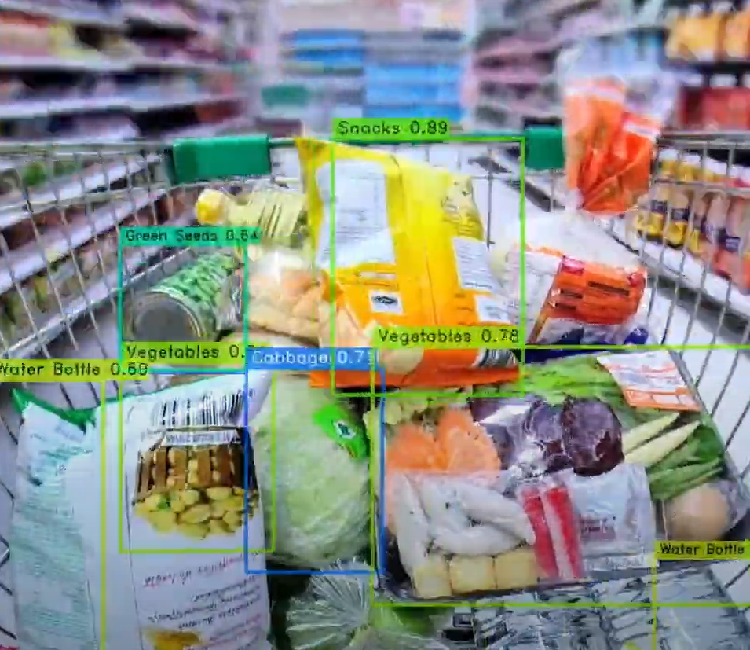
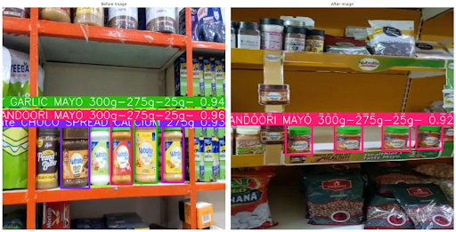
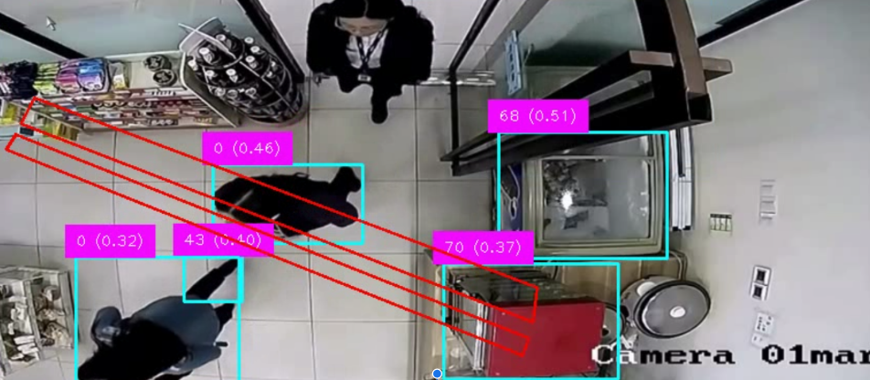
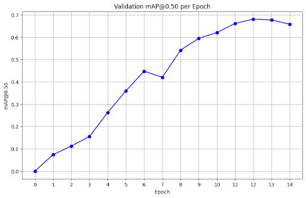
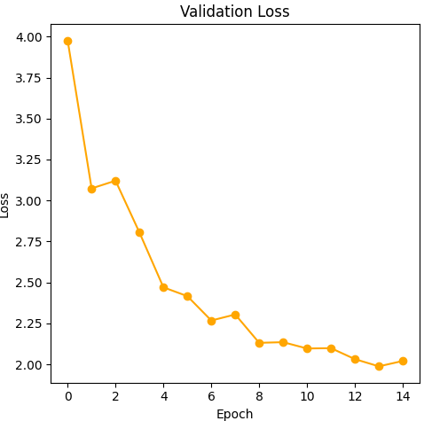
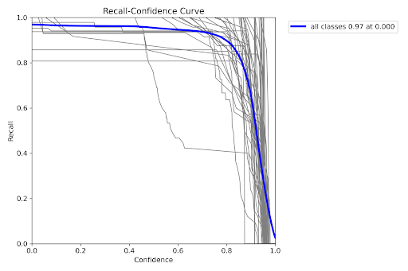
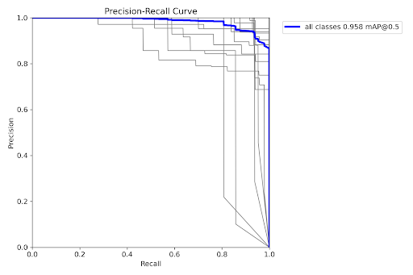
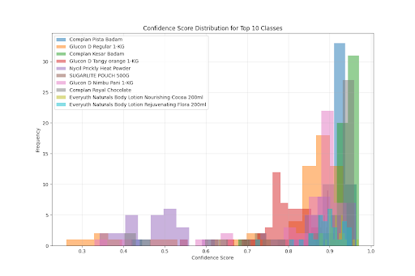

Leveraging state-of-the-art object detection models to automate retail shelf monitoring, cart analysis, and store foot-traffic insights by combining YOLOv8 and YOLO-NAS pipelines to deliver real-time, data-driven visibility







| Metric | Baseline Model (YOLOX Small) | Our Model | Which is Better |
|---|---|---|---|
| mAP | 0.4548 | 0.6470 | Our Model |
| Precision | 0.1882 | 0.0431 | Baseline |
| Recall | 0.5312 | 0.8894 | Our Model |
| F1 | 0.2693 | 0.0808 | Baseline |



| Metric | Baseline Model | Our Model |
|---|---|---|
| mAP | 0.4748 | 0.6111 |
| ID Switches (IDSW) | 130 | 71 |